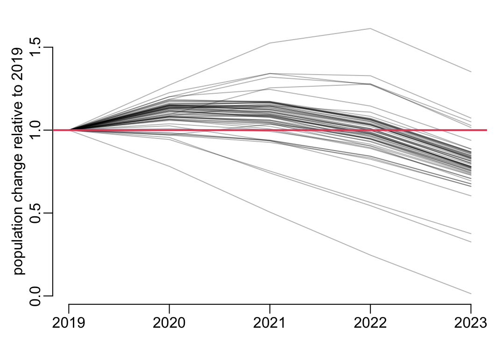
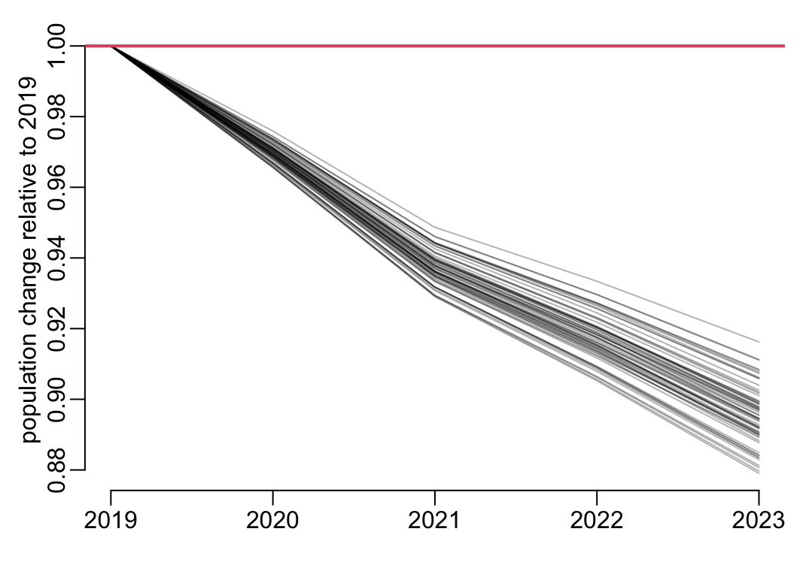
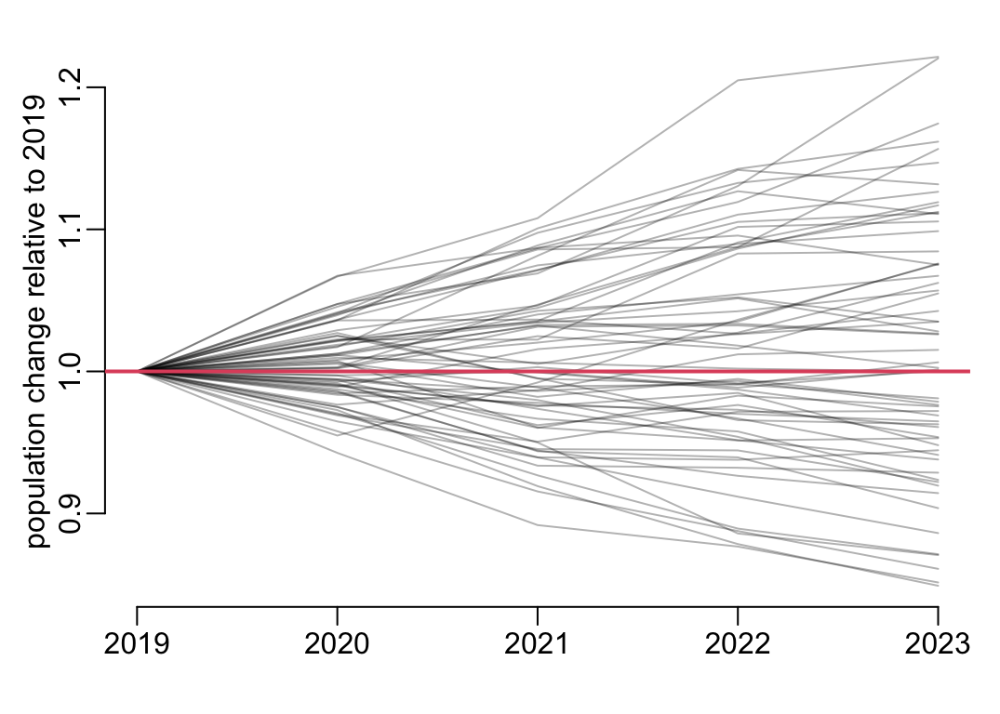
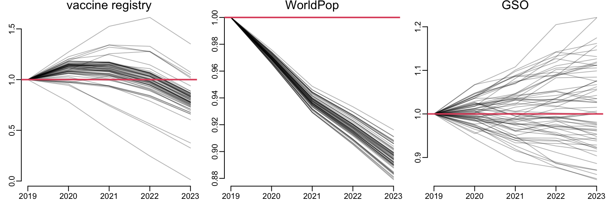
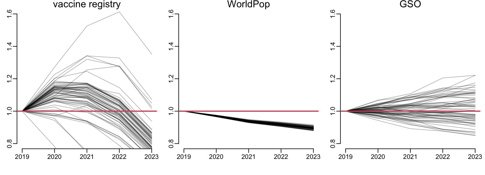
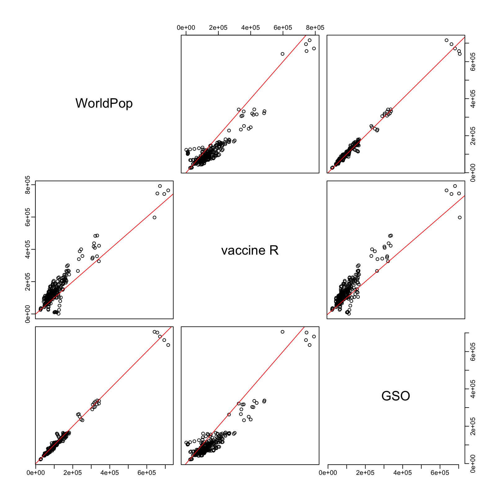

onedrive_root <- paste0("/Users/", Sys.getenv("USER"), "/Library/CloudStorage/",
"OneDrive-OxfordUniversityClinicalResearchUnit/")0-5 year-old population sizes
1 Constants
The root of the data files:
The folder that contains the data files on diphtheria vaccine coverage:
project_data <- paste0(onedrive_root, "GitHub/choisy/diphtheria/")The folder that contains all the other data:
other_data <- paste0(onedrive_root, "data/")2 Packages
Loading the packages:
library(dplyr)
library(purrr)
library(tidyr)
library(readxl)3 Loading data
The vaccine registry data:
vaccine_registry <- project_data |>
paste0("dip_coverage_by_perma.rds") |>
readRDS() |>
mutate(across(province, ~ .x |>
trimws() |>
stringi::stri_trans_general("Latin-ASCII")))The WorldPop data:
worldpop <- other_data |>
paste0("WorldPop/worldpop_vnm_age_structure_2019_2025.rds") |>
readRDS() |>
mutate(across(province, trimws))A function that reads an excel file from GSO:
read_excel2 <- function(file, value_name, ...) {
read_excel(paste0(other_data, "GSO/", file), skip = 2, ...) |>
pivot_longer(-province, names_to = "year", values_to = value_name) |>
mutate(across(year, as.integer),
across(province, trimws))
}The birth rate data:
birth_rate <- read_excel2("crude birth rate by province and year.xlsx", "birth_rate")The population size data:
pop_size <- read_excel2("population by province by provincies and year.xlsx",
"pop_size")4 Relative changes
A function that computes the population size changes respective to 2019:
adds_relative_change <- function(x) {
x |>
arrange(province, year) |>
group_by(province) |>
mutate(rel_change = n_children / first(n_children))
}A function that plots the population size changes respective to 2019:
plots_relative_changes <- function(x,
ylab = "population change relative to 2019", ...) {
with(x, plot(year, rel_change, type = "n", xlab = NA, ylab = ylab, ...))
group_walk(x, ~ with(.x, lines(year, rel_change, col = adjustcolor(1, .3))))
abline(h = 1, col = 2, lwd = 2)
}The data from the vaccine registry:
vaccine_registry2 <- vaccine_registry |>
rename(year = eval_year) |>
select(year, province, n_children) |>
adds_relative_change()
plots_relative_changes(vaccine_registry2)

The 3 provinces with the deep drop:
vaccine_registry2 |>
ungroup() |>
filter(year > 2022, rel_change < .5)# A tibble: 3 × 4
year province n_children rel_change
<int> <chr> <int> <dbl>
1 2023 Dien Bien 30396 0.376
2 2023 Hoa Binh 25539 0.326
3 2023 Son La 1377 0.0135The data from WorldPop:
worldpop2 <- worldpop |>
filter(age_class %in% c("[0;1[", "[1;5["), year < 2024) |>
group_by(province, year) |>
summarise(n_children = sum(number_of_people)) |>
adds_relative_change()
plots_relative_changes(worldpop2)

A function that computes the number of children below the age of 5:
years <- 2019:2023
compute_below_5 <- function(x) {
tibble(province = x$province[1],
year = years,
n_children = map_dbl(1:5, ~ sum(x$births[.x:(.x + 4)])))
}Computing the data from GSO:
gso <- birth_rate |>
left_join(pop_size, c("province", "year")) |>
mutate(births = birth_rate * pop_size) |>
filter(year > 2014) |>
na.exclude() |>
arrange(province, year) |>
group_by(province) |>
group_modify(~ compute_below_5(.x))The data from GSO:
gso2 <- adds_relative_change(gso)
plots_relative_changes(gso2)

The 3 data sources altogether:
opar <- par(mfrow = c(1, 3))
plots_relative_changes2 <- function(...) plots_relative_changes(..., ylab = NA)
plots_relative_changes2(vaccine_registry2)
mtext("vaccine registry")
plots_relative_changes2(worldpop2)
mtext("WorldPop")
plots_relative_changes2(gso2)
mtext("GSO")
par(opar)

opar <- par(mfrow = c(1, 3))
plots_relative_changes3 <- function(...) {
plots_relative_changes2(..., ylim = c(.8, 1.6))
}
plots_relative_changes3(vaccine_registry2)
mtext("vaccine registry")
plots_relative_changes3(worldpop2)
mtext("WorldPop")
plots_relative_changes3(gso2)
mtext("GSO")
par(opar)

Merging all the data:
all_data <- worldpop2 |>
left_join(gso2, c("province", "year"), suffix = c("_wp", "_gso")) |>
left_join(vaccine_registry2, c("province", "year")) |>
ungroup()pairs_plot <- function(x) {
x |>
na.exclude() |>
setNames(c("WorldPop", "GSO", "vaccine R")) |>
select(WorldPop, `vaccine R`, GSO) |>
pairs(panel = function(x, y, ...) {
points(x, y, ...)
abline(0, 1, col = "red", lwd = 1)
box(bty = "o")
})
}all_data |>
select(starts_with("n")) |>
pairs_plot()

all_data |>
select(starts_with("r")) |>
pairs_plot()